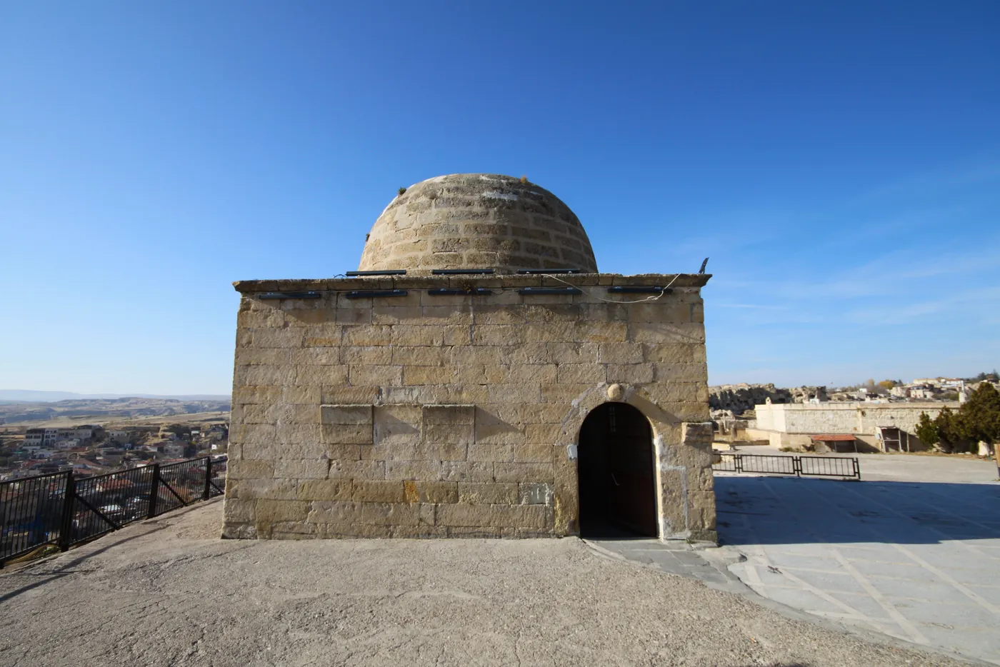

Ürgüp Tahsinağa Halk Kütüphanesi'nin kuruluşu, Osmanlı İmparatorluğu dönemine, 1855 yılına dayanmaktadır. Kütüphane, Sultan Abdülmecid Han’ın İkinci Müsahib-i Sanisi (ikinci sohbet arkadaşı) Tahsin Ağa tarafından kurulmuştur. Tahsin Ağa, kütüphane işlevini görecek bir yapı olarak, Ürgüp’ün güneyinde yer alan Temenni Tepesi’ne özel bir kümbet inşa ettirmiştir. Kurumun ilk koleksiyonu, Saray Kütüphanesi’nde birden fazla nüshası bulunan 817 cilt el yazması eserin develer vasıtasıyla Ürgüp’e nakledilmesiyle oluşturulmuştur. Kütüphane, modern Türk kütüphanecilik tarihinde önemli bir dönüm noktasına işaret eden gelişmelerle adını duyurmuştur. 1944 yılında Mustafa Güzelgöz’ün kütüphane müdürlüğü görevine atanması, kurumsal hizmetlerin genişlemesini sağlamıştır. Güzelgöz’ün girişimleriyle, kütüphane 1952 yılında Ürgüp ilçe merkezindeki yeni ve daha uygun binasına taşınmıştır. Mustafa Güzelgöz, özellikle Anadolu’daki okuma oranını artırma hedefiyle, köylere düzenli olarak eşekler aracılığıyla kitap taşıma hizmeti sunmasıyla tanınmıştır. Bu özverili ve yenilikçi hizmet anlayışı sayesinde kendisi, "Eşekli Kütüphaneci" unvanını alarak Türk kütüphanecilik camiasında sembolik bir figür haline gelmiş ve halk arasında derin bir saygı uyandırmıştır. Bu model, kırsal kesime kültürel erişimi sağlama ve okuryazarlığı teşvik etme konusunda önemli bir başarı hikayesi olarak kayıtlara geçmiştir.
The Ürgüp Tahsinağa Public Library dates back to the Ottoman period, to the year 1855. It was founded by Tahsin Ağa, the Second Companion (musahib) of Sultan Abdülmecid Han. To serve as a library, Tahsin Ağa had a special domed mausoleum (kümbet) built on Temenni Hill, south of Ürgüp. The institution's first collection was formed by transporting 817 manuscript volumes — duplicate copies held in the Palace Library — to Ürgüp by camel. The library became known for developments marking an important turning point in the history of modern Turkish librarianship. The appointment of Mustafa Güzelgöz as director in 1944 expanded its services, and through his initiatives the library moved in 1952 to a new, more suitable building in central Ürgüp. Güzelgöz became famous for regularly delivering books to villages by donkey, aiming to raise literacy across Anatolia. Through this devoted and innovative service he earned the title 'the Librarian on a Donkey' (Eşekli Kütüphaneci), becoming a symbolic figure in Turkish librarianship and earning deep public respect. The model is recorded as an important success story for bringing cultural access to rural communities and encouraging literacy.